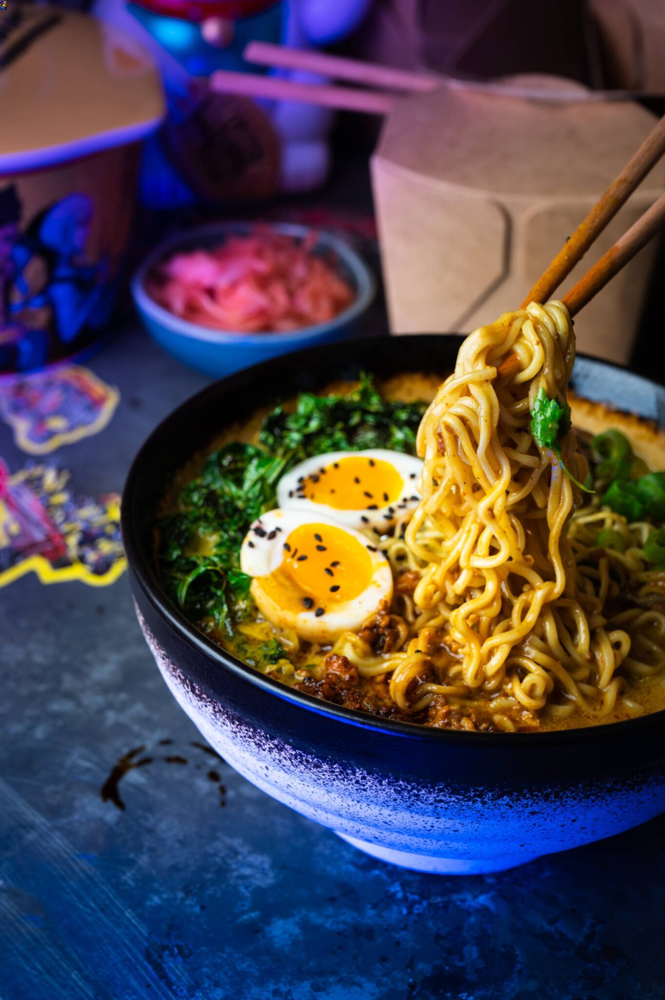
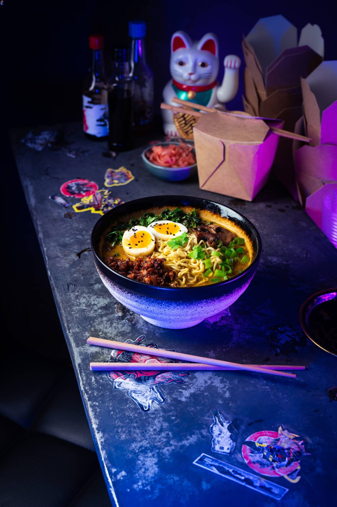

Today we will be preparing this "futuristic" Take on a Cozy Classic
credits to CD Project Red for making the recipe and images

Description
Creamy Curry Ramen with fried sweet and spicy tofu and toppings, UPGRADES in the form of fried mushrooms, kale and an egg with a runny yolk,
plus a bit of chopped spring onion and sesame seeds, prepare this extraodinary food and sit down with a bowl of warm ramen infront of the tv,
fire up Netlix and watch Edgerunners from Studio trigger.
Ingredients List
Broth Ingredients
- 3 tbsp canola oil or other neutral vegetable oil
- 2 garlic cloves, peeled and minced
- 1 1/2 tsp (5g) fresh ginger, peeled and minced
- 1 tsp yellow curry paste or green for a spicer version
- 3 tsp yellow mild curry powder
- 1 cup (250 ml) coconut milk or soy milk
- 2 cups (500 ml) water or vegetable broth
- 2 tbsp light soy sauce
- 1 tbsp cane sugar or honey/maple syrup
- 2 tbsp juice of lime or lemon
- 2 portions fresh or instant ramen noodles or other quick-cooking noodles
Topping upgrades
- Green onions, Chopped
- Cilantro or flat-leaf parsely leaves, Chopped
- Sesame seeds
- Fried sweet chili tofu crumbles (see ssection A.1 for cooking instructions)
- Soft-boiled eggs (see section A.2 for cooking instructions)
- Fried Kale (see section A.3)
- Fried sliced mushrooms, either cremini or button (see section A.4)
Preperation Steps
- In a medium pot on medium heat, warm the oil, add minced ginger and garlic, and fry for 2 minutes, stirring frequently
- Add curry paste and curry powder to desired spice level, and fry for 30 seconds stirring frequently
- Stir coconut/soy milk and water. then simmer the broth on low heat for 10 minutes stirring occasionally
- Add soy sauce, lime juice and sugar, stir thoroughly and let it simmer for 1 minute, Tatse the broth -
if needed, add more spices, salt, juice, and sugar, or water to dilute the intensity, to balance the flavor.
You can also experiment and use a bit of the flavor packet that comes with the instant ramen. (if using instant ramen)
- Cook ramen noodles until al-dente according to the package directions - use a separate pot of boiling water with
1 tsp of salt, then drain and add noodles straight to the bowl, you can also cook the noodles in the same pot as the broth
simply add the noodles to the broth toward the end of cooking, simmer, and stir occasionally until the noodles are
tender.
- Ladle broth and ramen noodles into bowls, then toss in any toppings you have on hand - see Toppings Upgrade section
Toppings upgrade Preperations Steps
This section goes into preperation steps for Topping Upgrades
A.1 Fried Sweet chili tofu crumbles
Ingredients
- 200g natural firm tofu
- 3 tbsp canola oil or any other neurtal vegetable oil
- 2 garlic cloves, peeled and minced
- 2 tbsp soy sauce or teriyaki sauce
- 1/2 tsp crushed chili flakes or few thin slices of chili or jalapeno pepper
- 1 1/2 tsp sweet paprika powder
- 1/2 tsp five-spice powder (optional)
- 2 tbsp honey or maple syrup
- 3 tbsp sesame oil
Preperation
- Drain and slightly squeeze tofu to get rid of excess liquid, then finely crumble it into a bowl using your hands
- On medium heat, warm the oil in a non-stick pan, add garlic and fry for 1 minute, stirring frequently
- Add crumbled tofu and soy sauce to the pan, stir to combine. Fry on medium heat, stirring occasionally for about 8 minutes until the liquid
evaporates and the crumble starts to brown
- Add paprika powder, and spices (if using), mix thoroughly to coat, then continue to fry, stirring occasionally, for 2 to 3 minutes,
until the crumble is nicely browned.
- Add Honey and sesame oil, and stir thoroughly to combine. Taste the crumble and add more chili and salt if needed
- Top each ramen bowl with about 3 tbsp of the crumble and enjoy
A.2 Soft-Boiled Eggs
Preperation
Keep the eggs at room temperature for about 1 hour before cooking. in a small saucepan, heat the water until heavily steaming.
but not boiling, using a tablespoon slowly submerge 2 eggs in the hot water, then turn the heat to high and immediately bring the water to a boil.
Once boiling, lower the heat down to medium and cook the eggs for 5 minutes (smaller eggs) to 6 minutes (larger eggs). Immediately transfer the cooked
egg to a large bowl filled with cold water. set aside until cool, then peel, halve, and server sprinked with sesame seeds on top of each ramen bowl.
A.3 Fried Kale
Preperation
Place 3 handfuls 60g, of kale leaves in a sieve, pour boiling water over them and set aside briefly to drain. in a none-stick pan, add the kale leaves
and 2 pinches of salt, cook until the remaining water evaporates (about 1 minute) then add 2 tbsp of v3egetable oil and fry on medium heat for about
5 minutes. stirring from time to time, until the kale laves are browned on the edges. Top each ramen bowl with half a portion.
A.4 Fried Mushrooms
Preperation
Slice 4 mushrooms into even layers, in a non-stick pan, warm 1 tbsp of butter, then arrange the mushroom slices next to each other in one layer, and fry
for 2 to 3 minutes on one side until nicely browned, without stirring. Then flip, and continue to fry until nicely browned on the other side. Season with 2
pinches of salt at the very end of cooking and stir to combine. Top each ramen bowl with a half portion.

I hope you had fun making this recipe and enjoy!
Home